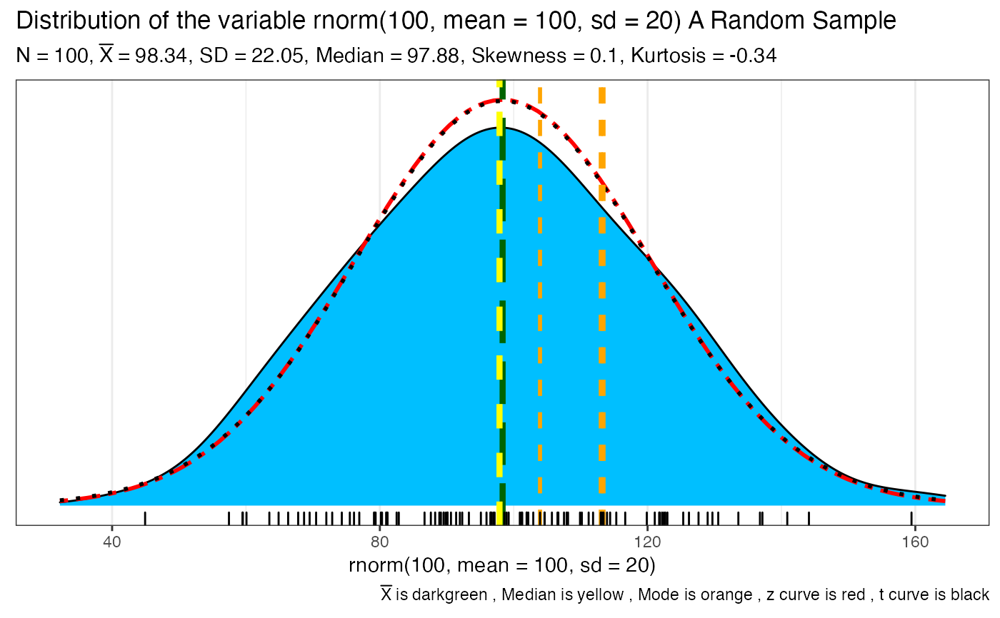
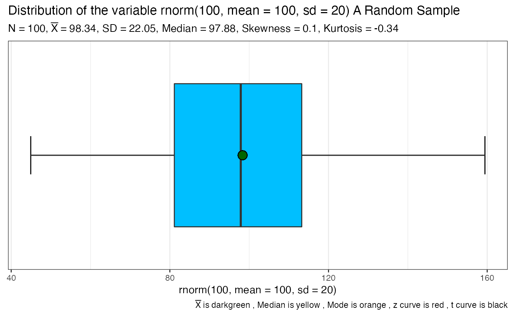
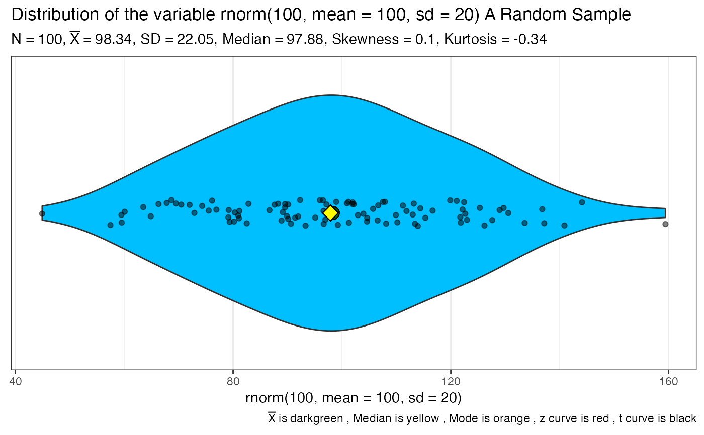

This function takes a vector of numeric data and returns one or more ggplot2 plots that help you visualize the data
SeeDist(qqq, numbins = 0, whatvar = "Unspecified", whatplots = c("d", "b", "h"))
Arguments
| qqq | the data to be visualized must be numeric. |
|---|---|
| numbins | the number of bins to use for any plots that bin. If nothing is
specified the function will calculate a rational number using Freedman-Diaconis
via the |
| whatvar | additional contextual information about the variable as a string such as "Miles Per Gallon" |
| whatplots | what type of plots? The default is whatplots = c("d","b","h") for a density, a boxplot, and a histogram |
Value
from 1 to 3 plots depending on what the user specifies as well as a base R summary printed to the console
Warning
If the data has more than 3 modal values only the first three of them are plotted. The rest are ignored and the user is warned on the console.
Missing values are removed with a warning to the user
See also
nclass
Examples
SeeDist(rnorm(100, mean=100, sd=20), numbins = 15, whatvar = "A Random Sample")#> Warning: There are 100 modal values displaying just the first 3#> Min. 1st Qu. Median Mean 3rd Qu. Max. #> 39.91 92.06 106.54 104.72 119.29 155.69SeeDist(mtcars$hp, whatvar = "Horsepower")#> Error in grid.Call(C_textBounds, as.graphicsAnnot(x$label), x$x, x$y, resolveHJust(x$just, x$hjust), resolveVJust(x$just, x$vjust), x$rot, 0): polygon edge not foundSeeDist(iris$Sepal.Length, whatvar = "Sepal Length")#> Error in grid.Call(C_textBounds, as.graphicsAnnot(x$label), x$x, x$y, resolveHJust(x$just, x$hjust), resolveVJust(x$just, x$vjust), x$rot, 0): polygon edge not found